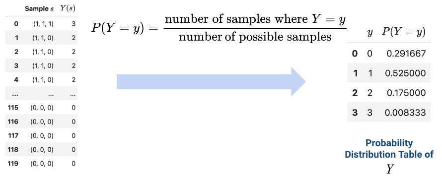
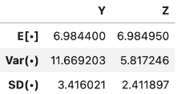

Random Variables
In the past few lectures, we’ve examined the role of complexity in influencing model performance. We’ve considered model complexity in the context of a tradeoff between two competing factors: model variance and training error.
Thus far, our analysis has been mostly qualitative. We’ve acknowledged that our choice of model complexity needs to strike a balance between model variance and training error, but we haven’t yet discussed why exactly this tradeoff exists.
To better understand the origin of this tradeoff, we will need to introduce the language of random variables. The next two lectures on probability will be a brief digression from our work on modeling so we can build up the concepts needed to understand this so-called bias-variance tradeoff. Our roadmap for the next few lectures will be:
- Random Variables Estimators: introduce random variables, considering the concepts of expectation, variance, and covariance
- Estimators, Bias, and Variance: re-express the ideas of model variance and training error in terms of random variables and use this new perspective to investigate our choice of model complexity
Random Variables and Distributions
Suppose we generate a set of random data, like a random sample from some population. A random variable is a numerical function of the randomness in the data. It is random since our sample was drawn at random; it is variable because its exact value depends on how this random sample came out. As such, the domain or input of our random variable is all possible (random) outcomes in a sample space, and its range or output is the number line. We typically denote random variables with uppercase letters, such as \(X\) or \(Y\).
Distribution
For any random variable \(X\), we need to be able to specify 2 things:
- Possible values: the set of values the random variable can take on.
- Probabilities: the set of probabilities describing how the total probability of 100% is split over the possible values.
If \(X\) is discrete (has a finite number of possible values), the probability that a random variable \(X\) takes on the value \(x\) is given by \(P(X=x)\), and probabilities must sum to 1: \(\sum_{\text{all} x} P(X=x) = 1\),
We can often display this using a probability distribution table, which you will see in the coin toss example below.
The distribution of a random variable \(X\) is a description of how the total probability of 100% is split over all the possible values of \(X\), and it fully defines a random variable. The distribution of a discrete random variable can also be represented using a histogram. If a variable is continuous – it can take on infinitely many values – we can illustrate its distribution using a density curve.

Probabilities are areas. For discrete random variables, the area of the red bars represent the probability that a discrete random variable \(X\) falls within those values. For continuous random variables, the area under the curve represents the probability that a discrete random variable \(Y\) falls within those values.

If we sum up the total area of the bars/under the density curve, we should get 100%, or 1.
Example: Tossing a Coin
To give a concrete example, let’s formally define a fair coin toss. A fair coin can land on heads (\(H\)) or tails (\(T\)), each with a probability of 0.5. With these possible outcomes, we can define a random variable \(X\) as: \[X = \begin{cases} 1, \text{if the coin lands heads} \\ 0, \text{if the coin lands tails} \end{cases}\]
\(X\) is a function with a domain, or input, of \(\{H, T\}\) and a range, or output, of \(\{1, 0\}\). We can write this in function notation as \[\begin{cases} X(H) = 1 \\ X(T) = 0 \end{cases}\] The probability distribution table of \(X\) is given by.
| \(x\) | \(P(X=x)\) |
|---|---|
| 0 | \(\frac{1}{2}\) |
| 1 | \(\frac{1}{2}\) |
Suppose we draw a random sample \(s\) of size 3 from all students enrolled in Data 100. We can define \(Y\) as the number of data science students in our sample. Its domain is all possible samples of size 3, and its range is \(\{0, 1, 2, 3\}\).

We can show the distribution of \(Y\) in the following tables. The table on the left lists all possible samples of \(s\) and the number of times they can appear (\(Y(s)\)). We can use this to calculate the values for the table on the right, a probability distribution table.

Simulation
Given a random variable \(X\)’s distribution, how could we generate/simulate a population? To do so, we can randomly pick values of \(X\) according to its distribution using np.random.choice or df.sample.
Expectation and Variance
There are several ways to describe a random variable. The methods shown above – a table of all samples \(s, X(s)\), distribution table \(P(X=x)\), and histograms – are all definitions that fully describe a random variable. Often, it is easier to describe a random variable using some numerical summary rather than fully defining its distribution. These numerical summaries are numbers that characterize some properties of the random variable. Because they give a “summary” of how the variable tends to behave, they are not random – think of them as a static number that describes a certain property of the random variable. In Data 100, we will focus our attention on the expectation and variance of a random variable.
Expectation
The expectation of a random variable \(X\) is the weighted average of the values of \(X\), where the weights are the probabilities of each value occurring. There are two equivalent ways to compute the expectation:
- Apply the weights one sample at a time: \[\mathbb{E}[X] = \sum_{\text{all possible } s} X(s) P(s)\].
- Apply the weights one possible value at a time: \[\mathbb{E}[X] = \sum_{\text{all possible } x} x P(X=x)\]
We want to emphasize that the expectation is a number, not a random variable. Expectation is a generalization of the average, and it has the same units as the random variable. It is also the center of gravity of the probability distribution histogram, meaning if we simulate the variable many times, it is the long-run average of the random variable.
Example 1: Coin Toss
Going back to our coin toss example, we define a random variable \(X\) as: \[X = \begin{cases} 1, \text{if the coin lands heads} \\ 0, \text{if the coin lands tails} \end{cases}\] We can calculate its expectation \(\mathbb{E}[X]\) using the second method of applying the weights one possible value at a time: \[\begin{align} \mathbb{E}[X] &= \sum_{x} x P(X=x) \\ &= 1 * 0.5 + 0 * 0.5 \\ &= 0.5 \end{align}\] Note that \(\mathbb{E}[X] = 0.5\) is not a possible value of \(X\); it’s an average. The expectation of X does not need to be a possible value of X.
Example 2
Consider the random variable \(X\):
| \(x\) | \(P(X=x)\) |
|---|---|
| 3 | 0.1 |
| 4 | 0.2 |
| 6 | 0.4 |
| 8 | 0.3 |
To calculate it’s expectation, \[\begin{align} \mathbb{E}[X] &= \sum_{x} x P(X=x) \\ &= 3 * 0.1 + 4 * 0.2 + 6 * 0.4 + 8 * 0.3 \\ &= 0.3 + 0.8 + 2.4 + 2.4 \\ &= 5.9 \end{align}\] Again, note that \(\mathbb{E}[X] = 5.9\) is not a possible value of \(X\); it’s an average. The expectation of X does not need to be a possible value of X.
Variance
The variance of a random variable is a measure of its chance error. It is defined as the expected squared deviation from the expectation of \(X\). Put more simply, variance asks: how far does \(X\) typically vary from its average value, just by chance? What is the spread of \(X\)’s distribution?
\[\text{Var}(X) = \mathbb{E}[(X-\mathbb{E}[X])^2]\]
The units of variance are the square of the units of \(X\). To get it back to the right scale, use the standard deviation of \(X\): \[\text{SD}(X) = \sqrt{\text{Var}(X)}\]
Like with expectation, variance is a number, not a random variable! Its main use is to quantify chance error.
By Chebyshev’s inequality, which you saw in Data 8, no matter what the shape of the distribution of X is, the vast majority of the probability lies in the interval “expectation plus or minus a few SDs.”
If we expand the square and use properties of expectation, we can re-express variance as the computational formula for variance. This form is often more convenient to use when computing the variance of a variable by hand, and it is also useful in Mean Squared Error calculations, as \(\mathbb{E}[X^2] = \text{Var}(X)\) if \(X\) is centered and \(E(X)=0\).
\[\text{Var}(X) = \mathbb{E}[X^2] - (\mathbb{E}[X])^2\]
How do we compute \(\mathbb{E}[X^2]\)? Any function of a random variable is also a random variable – that means that by squaring \(X\), we’ve created a new random variable. To compute \(\mathbb{E}[X^2]\), we can simply apply our definition of expectation to the random variable \(X^2\).
\[\mathbb{E}[X^2] = \sum_{x} x^2 P(X = x)\]
Example: Dice
Let \(X\) be the outcome of a single fair dice roll. \(X\) is a random variable defined as \[X = \begin{cases} \frac{1}{6}, \text{if } x \in \{1,2,3,4,5,6\} \\ 0, \text{otherwise} \end{cases}\]
Sums of Random Variables
Often, we will work with multiple random variables at the same time. A function of a random variable is also a random variable; if you create multiple random variables based on your sample, then functions of those random variables are also random variables.
For example, if \(X_1, X_2, ..., X_n\) are random variables, then so are all of these:
- \(X_n^2\)
- \(\#\{i : X_i > 10\}\)
- \(\text{max}(X_1, X_2, ..., X_n)\)
- \(\frac{1}{n} \sum_{i=1}^n (X_i - c)^2\)
- \(\frac{1}{n} \sum_{i=1}^n X_i\)
Equal vs. Identically Distributed vs. i.i.d
Suppose that we have two random variables \(X\) and \(Y\):
- \(X\) and \(Y\) are equal if \(X(s) = Y(s)\) for every sample \(s\). Regardless of the exact sample drawn, \(X\) is always equal to \(Y\).
- \(X\) and \(Y\) are identically distributed if the distribution of \(X\) is equal to the distribution of \(Y\). We say “X and Y are equal in distribution.” That is, \(X\) and \(Y\) take on the same set of possible values, and each of these possible values is taken with the same probability. On any specific sample \(s\), identically distributed variables do not necessarily share the same value. If X = Y, then X and Y are identically distributed; however, the converse is not true (ex: Y = 7-X, X is a die)
- \(X\) and \(Y\) are independent and identically distributed (i.i.d) if
- The variables are identically distributed.
- Knowing the outcome of one variable does not influence our belief of the outcome of the other.
For example, let \(X_1\) and \(X_2\) be numbers on rolls of two fair die. \(X_1\) and \(X_2\) are i.i.d, so \(X_1\) and \(X_2\) have the same distribution. However, the sums \(Y = X_1 + X_1 = 2X_1\) and \(Z=X_1+X_2\) have different distributions but the same expectation.

However, \(Y = X_1\) has a larger variance

Properties of Expectation
Instead of simulating full distributions, we often just compute expectation and variance directly. Recall the definition of expectation: \[\mathbb{E}[X] = \sum_{x} x P(X=x)\] From it, we can derive some useful properties of expectation:
- Linearity of expectation. The expectation of the linear transformation \(aX+b\), where \(a\) and \(b\) are constants, is:
\[\mathbb{E}[aX+b] = aE[\mathbb{X}] + b\]
- Expectation is also linear in sums of random variables.
\[\mathbb{E}[X+Y] = \mathbb{E}[X] + \mathbb{E}[Y]\]
- If \(g\) is a non-linear function, then in general, \[\mathbb{E}[g(X)] \neq g(\mathbb{E}[X])\] For example, if \(X\) is -1 or 1 with equal probability, then \(\mathbb{E}[X] = 0\), but \(\mathbb{E}[X^2] = 1 \neq 0\).
Properties of Variance
Recall the definition of variance: \[\text{Var}(X) = \mathbb{E}[(X-\mathbb{E}[X])^2]\] Combining it with the properties of expectation, we can derive some useful properties of variance:
- Unlike expectation, variance is non-linear. The variance of the linear transformation \(aX+b\) is: \[\text{Var}(aX+b) = a^2 \text{Var}(X)\]
- Subsequently, \[\text{SD}(aX+b) = |a| \text{SD}(X)\]
- The full proof of this fact can be found using the definition of variance. As general intuition, consider that \(aX+b\) scales the variable \(X\) by a factor of \(a\), then shifts the distribution of \(X\) by \(b\) units.
- Shifting the distribution by \(b\) does not impact the spread of the distribution. Thus, \(\text{Var}(aX+b) = \text{Var}(aX)\).
- Scaling the distribution by \(a\) does impact the spread of the distribution.

- Variance of sums of RVs is affected by the (in)dependence of the RVs. \[\text{Var}(X + Y) = \text{Var}(X) + \text{Var}(Y) 2\text{cov}(X,Y)\] \[\text{Var}(X + Y) = \text{Var}(X) + \text{Var}(Y) \qquad \text{if } X, Y \text{ independent}\]
Covariance and Correlation
We define the covariance of two random variables as the expected product of deviations from expectation. Put more simply, covariance is a generalization of variance to two random variables: \(\text{Cov}(X, X) = \mathbb{E}[(X - \mathbb{E}[X])^2] = \text{Var}(X)\)
\[\text{Cov}(X, Y) = \mathbb{E}[(X - \mathbb{E}[X])(Y - \mathbb{E}[Y])]\]
We can treat the covariance as a measure of association. Remember the definition of correlation given when we first established SLR?
\[r(X, Y) = \mathbb{E}\left[\left(\frac{X-\mathbb{E}[X]}{\text{SD}(X)}\right)\left(\frac{Y-\mathbb{E}[Y]}{\text{SD}(Y)}\right)\right] = \frac{\text{Cov}(X, Y)}{\text{SD}(X)\text{SD}(Y)}\]
It turns out we’ve been quietly using covariance for some time now! If \(X\) and \(Y\) are independent, then \(\text{Cov}(X, Y) =0\) and \(r(X, Y) = 0\). Note, however, that the converse is not always true: \(X\) and \(Y\) could have \(\text{Cov}(X, Y) = r(X, Y) = 0\) but not be independent.
Summary
- Let \(X\) be a random variable with distribution \(P(X=x)\).
- \(\mathbb{E}[X] = \sum_{x} x P(X=x)\)
- \(\text{Var}(X) = \mathbb{E}[(X-\mathbb{E}[X])^2] = \mathbb{E}[X^2] - (\mathbb{E}[X])^2\)
- Let \(a\) and \(b\) be scalar values.
- \(\mathbb{E}[aX+b] = aE[\mathbb{X}] + b\)
- \(\text{Var}(aX+b) = a^2 \text{Var}(X)\)
- Let \(Y\) be another random variable.
- \(\mathbb{E}[X+Y] = \mathbb{E}[X] + \mathbb{E}[Y]\)
- \(\text{Var}(X + Y) = \text{Var}(X) + \text{Var}(Y) 2\text{cov}(X,Y)\)
Common Random Variables
There are several cases of random variables that appear often and have useful properties. Below are the ones we will explore further in this course. The numbers in parentheses are the parameters of a random variable, which are constants. Parameters define a random variable’s shape (i.e., distribution) and its values.
- Bernoulli(p)
- Takes on value 1 with probability p, and 0 with probability 1 - p.
- AKA the “indicator” random variable.
- Let X be a Bernoulli(p) random variable
- \(\mathbb{E}[X] = 1 * p + 0 * (1-p) = p\)
- \(\mathbb{E}[X^2] = 1^2 * p + 0 * (1-p) = p\)
- \(\text{Var}(X) = \mathbb{E}[X^2] - (\mathbb{E}[X])^2 = p - p^2 = p(1-p)\)
- \(\mathbb{E}[X] = 1 * p + 0 * (1-p) = p\)
- Binomial(n, p)
- Number of 1s in \(n\) independent Bernoulli(p) trials.
- Let \(Y\) be a Binomial(n, p) random variable.
- The distribution of \(Y\) is given by the binomial formula, and we can write \(Y = \sum_{i=1}^n X_i\) where:
- \(X_i\) s the indicator of success on trial i. \(X_i = 1\) if trial i is a success, else 0.
- All \(X_i\) are i.i.d. and Bernoulli(p).
- \(\mathbb{E}[Y] = \sum_{i=1}^n \mathbb{E}[X_i] = np\)
- \(\text{Var}(X) = \sum_{i=1}^n \text{Var}(X_i) = np(1-p)\)
- \(X_i\)’s are independent, so \(\text{Cov}(X_i, X_j) = 0\) for all i, j.
- The distribution of \(Y\) is given by the binomial formula, and we can write \(Y = \sum_{i=1}^n X_i\) where:
- Uniform on a finite set of values
- Probability of each value is 1 / (number of possible values).
- For example, a standard/fair die.
- Uniform on the unit interval (0, 1)
- Density is flat at 1 on (0, 1) and 0 elsewhere.
- Normal(\(\mu, \sigma^2\))
- \(f(x) = \frac{1}{\sigma\sqrt{2\pi}} \exp\left( -\frac{1}{2}\left(\frac{x-\mu}{\sigma}\right)^{\!2}\,\right)\)
Populations and Samples
Today, we’ve talked extensively about populations; if we know the distribution of a random variable, we can reliably compute expectation, variance, functions of the random variable, etc.
In Data Science, however, we often do not have access to the whole population, so we don’t know its distribution. As such, we need to collect a sample and use its distribution to estimate or infer properties of the population.
When sampling, we make the (big) assumption that we sample uniformly at random with replacement from the population; each observation in our sample is a random variable drawn i.i.d from our population distribution.
Sample Mean
Consider an i.i.d. sample \(X_1, X_2, ..., X_n\) drawn from a population with mean ùúá and SD ùúé. We define the sample mean as \[\bar{X_n} = \frac{1}{n} \sum_{i=1}^n X_i\]
The expectation of the sample mean is given by: \[\begin{align} \mathbb{E}[\bar{X_n}] &= \frac{1}{n} \sum_{i=1}^n \mathbb{E}[X_i] \\ &= \frac{1}{n} (n \mu) \\ &= \mu \end{align}\]
The variance is given by: \[\begin{align} \text{Var}(\bar{X_n}) &= \frac{1}{n^2} \text{Var}( \sum_{i=1}^n X_i) \\ &= \frac{1}{n^2} \left( \sum_{i=1}^n \text{Var}(X_i) \right) \\ &= \frac{1}{n^2} (n \sigma^2) = \frac{\sigma^2}{n} \end{align}\]
\(\bar{X_n}\) is normally distributed by the Central Limit Theorem (CLT).
Central Limit Theorem
The CLT states that no matter what population you are drawing from, if an i.i.d. sample of size \(n\) is large, the probability distribution of the sample mean is roughly normal with mean ùúá and SD \(\sigma/\sqrt{n}\).
Any theorem that provides the rough distribution of a statistic and doesn’t need the distribution of the population is valuable to data scientists because we rarely know a lot about the population!
For a more in-depth demo, check out onlinestatbook.
The CLT applies if the sample size \(n\) is large, but how large does n have to be for the normal approximation to be good? It depends on the shape of the distribution of the population.
- If the population is roughly symmetric and unimodal/uniform, could need as few as \(n = 20\).
- If the population is very skewed, you will need a bigger n.
- If in doubt, you can bootstrap the sample mean and see if the bootstrapped distribution is bell-shaped.
Using the Sample Mean to Estimate the Population Mean
Our goal with sampling is often to estimate some characteristic of a population. When we collect a single sample, it has just one average. Since our sample was random, it could have come out differently. The CLT helps us understand this difference. We should consider the average value and spread of all possible sample means, and what this means for how big \(n\) should be.
For every sample size, the expected value of the sample mean is the population mean. \(\mathbb{E}[\bar{X_n}] = \mu\). We call the sample mean an unbiased estimator of the population mean, and we’ll cover this more in the next lecture.
The square root law (Data 8) states that if you increase the sample size by a factor, the SD decreases by the square root of the factor. \(\text{SD}(\bar{X_n}) = \frac{\sigma}{\sqrt{n}}\). The sample mean is more likely to be close to the population mean if we have a larger sample size.